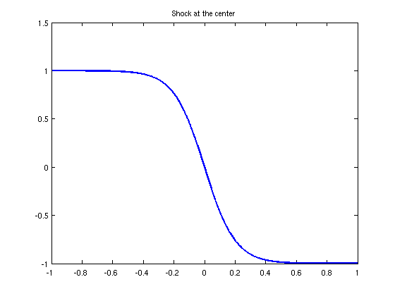
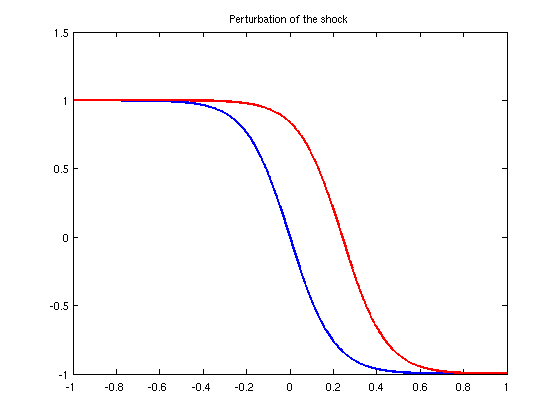
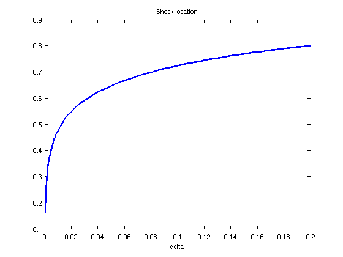

Stochastic collocation for Burgers' equation
Toby Driscoll, 14th December 2011
(Chebfun example stats/StochasticCollocationBurgers.m)
A differential equation with a stochastic parameter has a stochastic solution. By sampling some functional of the solution over the stochastic space, Chebfun can build an efficient representation that produces whatever statistics we like about the ensemble.
LW = 'linewidth'; FS = 'fontsize'; MS = 'markersize';
Consider the steady, viscous Burgers' equation,
u(x) u'(x) - nu*u''(x) = 0, u(-1) = 1+delta, u(1) = -1
For the nominal value delta=0, the solution has a symmetrically located smoothed-out shock:
N = chebop(@(u) u.*diff(u)-0.1*diff(u,2),[-1,1],1,-1);
u0 = N\0; plot(u0,LW,2), title('Shock at the center')
 If we define the shock location as the root of the solution, we find it's essentially at zero.
s0 = roots(u0)
s0 =
1.043609643147647e-14
However, the solution, and in particular the shock location, is surprisingly sensitive to delta, as can be seen from perturbation analysis.
N = chebop(@(u) u.*diff(u)-0.1*diff(u,2),[-1,1],1+1e-3,-1); u = N\0; hold on, plot(u,'r',LW,2), title('Perturbation of the shock') s_new = roots(u)
s_new = 0.241423606924285
Now suppose that delta is drawn from a uniform distribution in the interval [0,0.2], and we want to know how the shock location responds. Perturbation analysis is unlikely to give good information near delta=0.2. We could try a Monte Carlo approach of solving numerous realizations to gather approximate statistics, but the convergence is slow in the number of trials.
Here we will instead use a simple, much more efficient alternative called stochastic collocation. We will ask Chebfun to sample the shock location function s(delta) to build an accurate representation.
Each realization of delta requires the solution of a deterministic steady Burgers problem. To speed this step up, we'll seed the iterations with an initial shock profile. We create an anonymous function that returns a Burgers chebop for any given delta value.
u = chebop(@(u) u.*diff(u)-0.1*diff(u,2),[-1,1],1.05,-1)\0; % generic shock N = @(delta) chebop(@(u) u.*diff(u)-0.1*diff(u,2),[-1,1],1+delta,-1,'init',u);
Now each evaluation of the function to be sampled involves locating the zero crossing of a BVP solution.
s = @(delta) roots( N(delta)\0 );
The process is relatively slow, so we'll accelerate matters by drastically reducing the error tolerances.
cheboppref('restol',1e-5) tic, shockfun = chebfun(s,[0,0.2],'eps',1e-3,'vectorize'), toc clf, plot(shockfun,LW,2), title('Shock location'), xlabel('delta')
Warning: Function exited with stagnation flag.
Warning: Function exited with stagnation flag.
shockfun =
chebfun column (1 smooth piece)
interval length endpoint values
[ 0, 0.2] 36 0.14 0.8
vertical scale = 0.8
Elapsed time is 324.478572 seconds.
 We see that 37 function evaluations suffice to represent the distribution of s(delta) accurately to about three digits. Comparable Monte Carlo sampling would take millions of realizations.
Now we know everything we could want to about the shock location as a random variable and can compute whatever statistics we like. It's especially easy for the uniform distribution we assumed for delta.
mu = mean(shockfun) sigma = std(shockfun)
mu = 0.690634450019623 sigma = 0.106333698408458
References:
[1] D. Xu, Numerical Methods for Stochastic Computations, Princeton University Press, 2010.